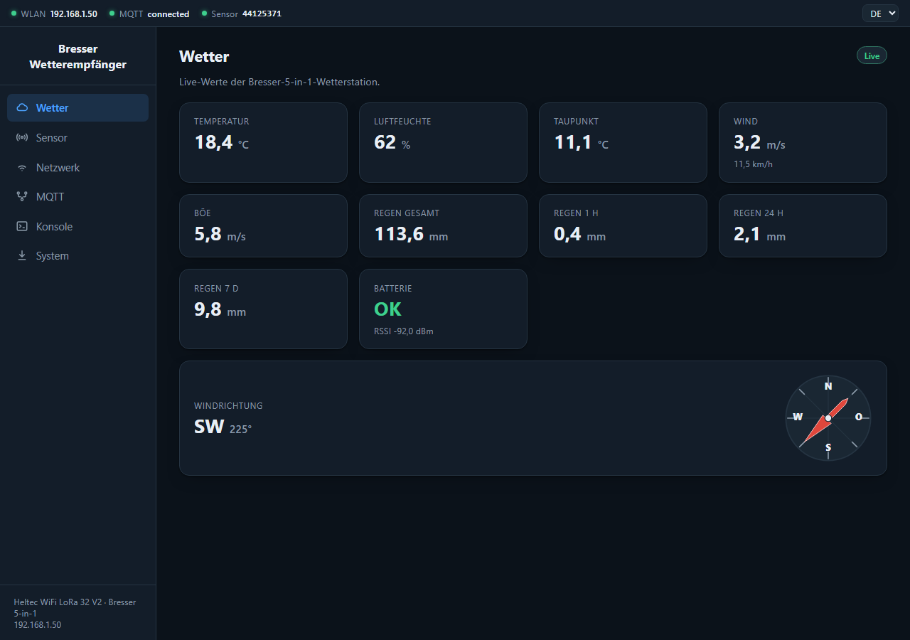
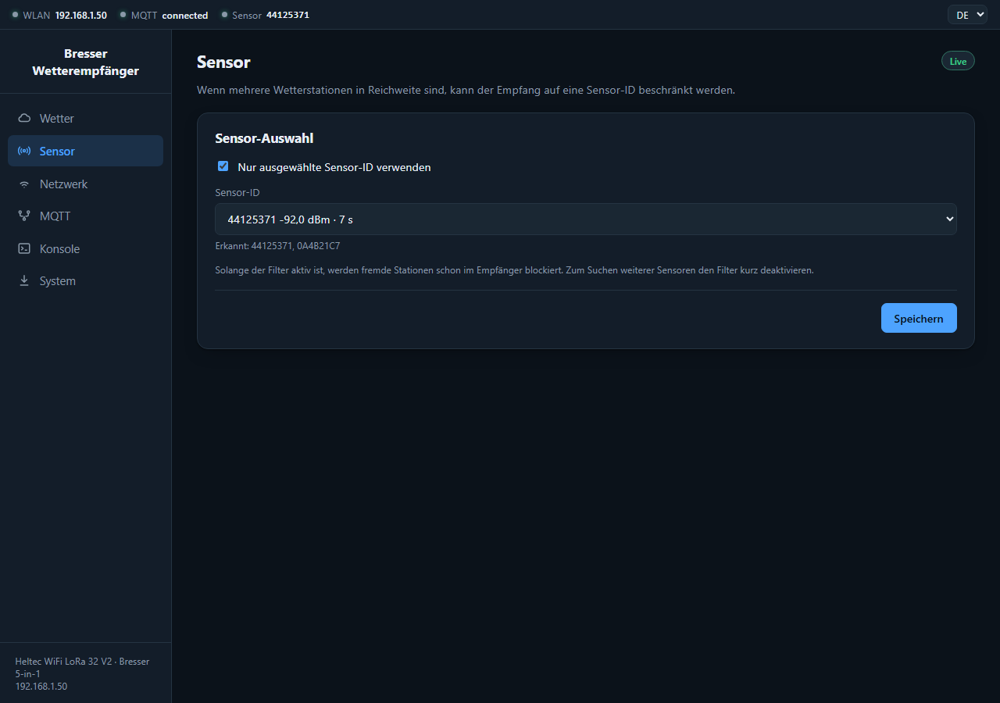
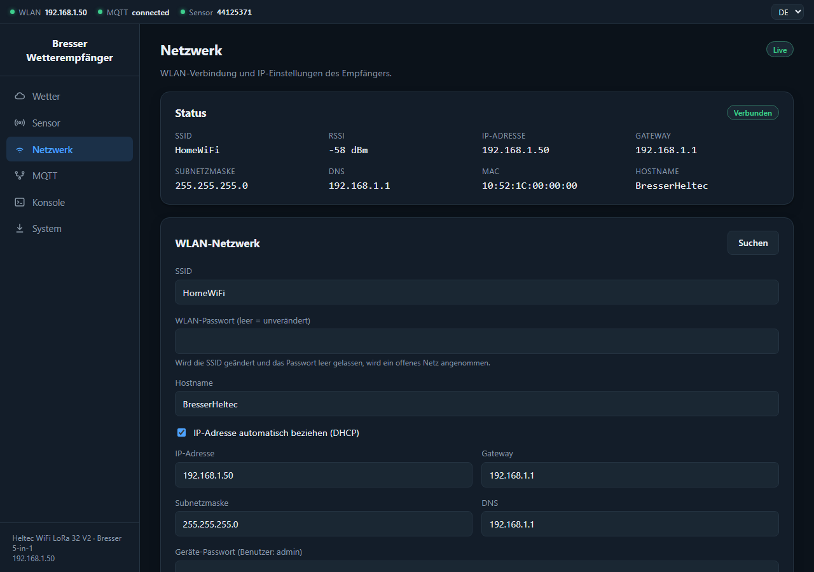
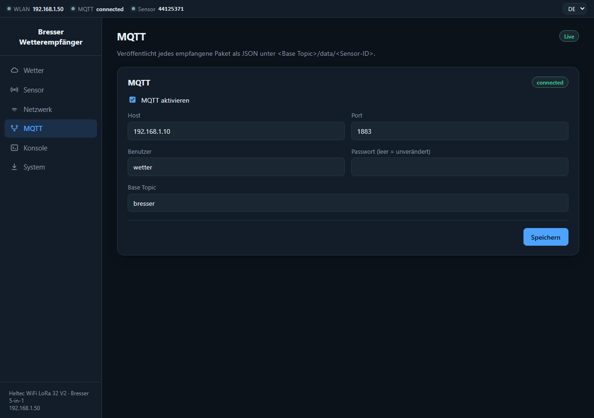
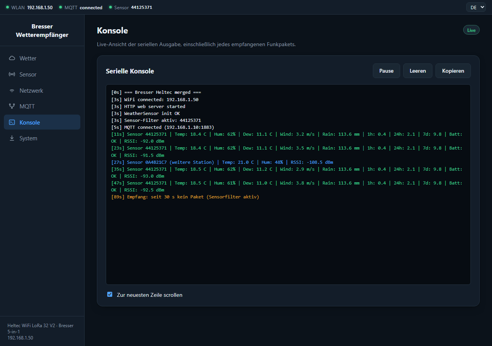
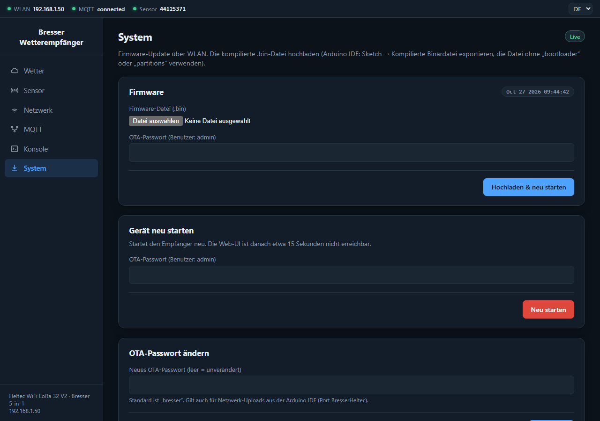

Empfang, Anzeige und Weitergabe der Messwerte einer Bresser-5-in-1-Wetterstation mit dem Heltec WiFi LoRa 32 V2

Die Bildschirmfotos zeigen Beispieldaten (Adressen und Namen sind Platzhalter) und stammen aus der Web-Oberfläche der Firmware 1.0.0.
Der Empfänger besteht aus einem Heltec WiFi LoRa 32 V2. Sein Funkchip (SX1276) empfängt auf 868 MHz die Telegramme der Bresser-5-in-1-Wetterstation. Die Firmware entschlüsselt sie, berechnet daraus weitere Größen (Taupunkt, Regen der letzten Stunde, 24 Stunden und 7 Tage) und stellt die Werte auf drei Wegen bereit:
Das Gerät ist ein reiner Empfänger. Es sendet nichts an die Wetterstation.
Für ein neues oder leeres Board gibt es im Release zwei Dateien:
| Datei | Zweck |
|---|---|
Bresser5in1-<Version>-erstinstallation.bin | Komplettes Flash-Image (8 MB), wird bei Adresse 0x0 geschrieben |
Bresser5in1-<Version>.bin | Nur die Firmware, für spätere Updates in der Web-Oberfläche |
espressif.github.io/esptool-js öffnen.921600 wählen, Connect klicken und den COM-Port des Geräts auswählen.0x0 eintragen, die Datei …-erstinstallation.bin wählen und Program klicken.esptool --chip esp32 --port COM5 --baud 921600 write_flash 0x0 Bresser5in1-v1.0.0-erstinstallation.bin
Für einen ganz sauberen Start vorher esptool --chip esp32 --port COM5 erase_flash ausführen.
Arduino IDE mit dem ESP32-Boardpaket (getestet: 3.3.10), Board Heltec WiFi LoRa 32(V2) und den Libraries
BresserWeatherSensorReceiver, RadioLib, WiFiManager, PubSubClient, ArduinoJson und
ESP8266 and ESP32 OLED driver for SSD1306 displays. Sketch Bresser5in1_Merged öffnen und hochladen.
Achtung: Das Komplett-Image löscht den Konfigurationsspeicher. WLAN-Zugang, MQTT-Einstellungen und das
OTA-Passwort müssen danach neu eingerichtet werden. Es ist für Boards mit 8 MB Flash gebaut; bei nur 4 MB bitte Weg C verwenden.
Die ausführliche Anleitung steht in INSTALLATION.md.
http://192.168.4.1 aufrufen.http://<IP-Adresse> öffnen, alternativ http://BresserHeltec.local.Das Portal bleibt fünf Minuten offen. Wird in dieser Zeit nichts eingerichtet, läuft das Gerät ohne WLAN weiter (Empfang und OLED funktionieren). Um das Portal später erneut zu öffnen, beim Einschalten die Taste PRG (GPIO0) gedrückt halten. Das WLAN lässt sich außerdem jederzeit auf der Seite Netzwerk ändern.
Die Oberfläche ist unter der IP-Adresse des Geräts erreichbar und passt sich der Bildschirmbreite an (am Handy öffnet das Menü-Symbol die Seitenleiste). Sie besteht aus einer Statusleiste, einer Seitenleiste zur Navigation und dem Inhaltsbereich.
Die Leiste am oberen Rand zeigt drei Punkte: WLAN (verbunden, mit IP-Adresse), MQTT (verbunden, getrennt oder deaktiviert) und Sensor (ID der angezeigten Station). Ein grüner Punkt bedeutet in Ordnung, gelb eine Warnung, grau nicht aktiv. Rechts oben wird zwischen EN und DE umgeschaltet; die Wahl wird im Browser gespeichert.
Das Abzeichen oben rechts zeigt Live, solange frische Daten ankommen, sonst das Alter des letzten Pakets oder Noch keine Daten. Die Seite aktualisiert sich alle drei Sekunden. Die Station sendet etwa alle zwölf Sekunden neue Werte.
| Karte | Bedeutung |
|---|---|
| Temperatur, Luftfeuchte | Gemessene Werte der Station |
| Taupunkt | Aus Temperatur und Luftfeuchte berechnet |
| Wind, Böe | Mittlere Windgeschwindigkeit und Böe in m/s; darunter der Wind in km/h |
| Regen gesamt | Fortlaufender Zähler der Station in mm |
| Regen 1 h / 24 h / 7 d | Vom Gerät aus dem Zähler berechnet. Beginnt nach einem Neustart bei 0 |
| Batterie, RSSI | Batteriezustand der Station und Signalstärke des letzten Pakets in dBm |
| Windrichtung | Himmelsrichtung, Grad und Windrose |
Der Regen-Gesamtzähler ist gegen Funkfehler abgesichert: Ein Sprung um mehr als 5 mm pro Paket (oder ein Rückgang) wird erst übernommen, wenn das nächste Paket denselben Wert bestätigt. Wird der Zähler der Station zurückgesetzt, zählt der Regen seit dem Reset weiter.

Sind mehrere Bresser-Stationen in Reichweite, lässt sich der Empfang auf eine Station beschränken:
Bei aktivem Filter werden fremde Stationen schon im Empfänger blockiert und erscheinen nicht mehr in der Liste. Zum Suchen weiterer Sensoren den Filter kurz ausschalten. Dashboard, OLED und Regenwerte gehören immer zu einer Station: der gespeicherten Sensor-ID, sonst der zuerst empfangenen. Weitere Stationen werden nur per MQTT veröffentlicht (ohne Regen-Zeitfenster).

Oben steht der aktuelle Zustand: SSID, RSSI des WLANs, IP-Adresse, Gateway, Subnetzmaske, DNS, MAC-Adresse und Hostname. Darunter lassen sich ändern:
Zum Speichern wird das Geräte-Passwort verlangt (Benutzer admin, Passwort = OTA-Passwort). Danach startet das Gerät neu.
Ein neues WLAN wird vorher getestet und nur bei Erfolg gespeichert; bei falschem Passwort bleibt das bisherige Netz erhalten.
Bei einem neuen Netz oder einer festen IP ist die Seite danach evtl. nicht mehr unter der alten Adresse erreichbar. Die neue IP steht auf dem OLED.
Eine feste IP muss zum Netz passen (Adresse, Gateway, Subnetzmaske).

MQTT ist optional und standardmäßig aus. Einzutragen sind Host, Port (Standard 1883), Benutzer, Passwort und Base Topic (Standard bresser).
Das Passwort wird nie an den Browser zurückgegeben; ein leeres Feld lässt es unverändert. Das Abzeichen zeigt den Verbindungszustand.
Veröffentlicht wird je Station unter <Base Topic>/data/<Sensor-ID>, siehe Kapitel „Messwerte weitergeben“.

Die Konsole zeigt die serielle Ausgabe des Geräts live an, ohne dass ein Kabel angeschlossen sein muss. Jede Zeile beginnt mit der Uptime in Sekunden. Die Meldungen sind deutschsprachig bzw. technisch und werden nicht übersetzt.
Mit Pause hält die Anzeige an, Leeren löscht sie, Kopieren legt den Text in die Zwischenablage. Das Gerät puffert die letzten 6 KB. Die Konsole ist das wichtigste Werkzeug, um den Empfang beim Aufstellen zu beurteilen.

Firmware-Update: Die Datei Bresser5in1-<Version>.bin wählen, das OTA-Passwort eingeben und Hochladen & neu starten klicken.
Ein Fortschrittsbalken läuft im Browser und auf dem OLED. Danach startet das Gerät selbst neu und behält alle Einstellungen. Das Abzeichen oben zeigt den Build-Zeitstempel
der laufenden Firmware. Bricht ein Update ab, bleibt die bisherige Firmware aktiv.
Alternativ lässt sich das Update über die Arduino IDE (Port BresserHeltec) einspielen; eine Firewall kann diesen Weg blockieren.
Gerät neu starten: Startet den Empfänger neu (Passwort erforderlich). Die Oberfläche ist danach etwa 15 Sekunden nicht erreichbar.
OTA-Passwort ändern: Das Standardpasswort lautet bresser und sollte sofort geändert werden.
Das Display zeigt kompakt, jeweils für die angezeigte Station: Sensor-ID, Temperatur und Luftfeuchte, Taupunkt, Wind, Regen gesamt sowie Regen der letzten Stunde und 24 Stunden. Die Anzeige ist gegenüber der Grundeinstellung des Displays um 180° gedreht. Beim Start steht dort die IP-Adresse; bei einem Firmware-Update zeigt es den Fortschritt.
Andere Geräte, etwa ein Multiinstrument, können die Werte direkt abfragen. Die API ist nur lesend, braucht keinen Login und sendet
Access-Control-Allow-Origin: *. Das Muster entspricht dem des Clinometers: GET /api/<gerät>/values, flaches JSON, Einheit im Feldnamen, stale-Flag.
GET http://<IP>/api/weather/values
{ "valid": true, "stale": false, "sensor_id": "44125371", "age_s": 8,
"temperature_c": 12.4, "humidity_pct": 95, "dew_point_c": 11.6,
"wind_speed_ms": 0.0, "wind_gust_ms": 0.0, "wind_dir_deg": 324, "wind_dir_text": "NNW",
"rain_total_mm": 113.6, "rain_1h_mm": 0.0, "rain_24h_mm": 0.0, "rain_7d_mm": 0.0,
"battery_ok": true, "rssi_dbm": -106.5 }
stale ist true, wenn noch keine Daten vorliegen oder das letzte Paket älter als 120 Sekunden ist.valid: false und stale: true; Zahlenfelder fehlen dann.GET /api/status liefert Firmware-Build, Uptime, freien Speicher, WLAN-Signal, IP, MQTT-Status, aktive Sensor-ID und last_packet_age_s (−1 = noch kein Paket).
Pro empfangenem Paket wird ein JSON unter <Base Topic>/data/<Sensor-ID> veröffentlicht, zum Beispiel bresser/data/44125371:
{ "id": 1142051697, "id_hex": "44125371", "temp_c": 12.4, "humidity": 95, "dew_point_c": 11.6,
"wind_speed_ms": 0.0, "wind_gust_ms": 0.0, "wind_dir_deg": 324, "wind_dir_text": "NNW",
"rain_mm": 113.6, "rain_hour_mm": 0.0, "rain_day_mm": 0.0, "rain_week_mm": 0.0,
"battery_ok": true, "rssi": -106.5, "uptime_s": 3600 }
Pakete weiterer Stationen enthalten keine Felder rain_hour_mm, rain_day_mm und rain_week_mm.
Zum Mitlesen: mosquitto_sub -h <Broker> -t 'bresser/#' -v.
Die Signalstärke (RSSI) steht auf der Seite Wetter und in jeder Zeile der Konsole. Je näher der Wert an 0 dBm liegt, desto besser. Im Test traten bei etwa −105 dBm bereits fehlerhafte Pakete auf (zum Beispiel ein ständig wechselnder Batteriestatus). Das ist ein Erfahrungswert, keine Herstellerangabe; je besser der Wert, desto zuverlässiger der Empfang.
Das Gerät braucht am neuen Standort außerdem ein brauchbares WLAN-Signal. Die WLAN-Signalstärke zeigt die Seite Netzwerk. Bei schwachem WLAN kann die Web-Oberfläche langsam reagieren oder abbrechen.
| Problem | Lösung |
|---|---|
| Keine Wetterdaten | Antenne angeschlossen? Näher an die Station? Auf der Seite Sensor den Filter ausschalten und in der Konsole nachsehen, ob irgendein Paket ankommt. |
| Falsche Station wird angezeigt | Filter ausschalten, warten, die richtige ID wählen, Filter einschalten, speichern. |
| Regenwerte 1 h / 24 h / 7 d stehen auf 0 | Normal nach einem Neustart: Die Fenster füllen sich erst mit der Zeit. Beim Start gilt der erste bestätigte Zählerstand als Basis. |
| Batterie wechselt zwischen OK und LOW | Meist Dekodierfehler bei schwachem Signal. Empfang verbessern, nicht sofort die Batterie tauschen. |
| Web-Oberfläche nicht erreichbar | IP vom OLED oder aus dem Router ablesen, gleiches Netz prüfen. Zum erneuten Einrichten des WLANs beim Start PRG gedrückt halten. |
| Nach Netzwerk-Änderung nicht erreichbar | Die neue IP steht auf dem OLED. Bei fester IP Adresse, Gateway und Subnetz prüfen. Im Notfall PRG beim Start halten und das WLAN neu einrichten. |
| MQTT verbindet, aber es kommen keine Daten an | Host, Port, Benutzer, Passwort und Base Topic prüfen. In der Konsole nach „MQTT publish failed“ suchen. Broker mit mosquitto_sub prüfen. |
| Update schlägt fehl | OTA-Passwort prüfen (Fehler 401 = falsches Passwort). Es muss die reine Firmware Bresser5in1-<Version>.bin sein, nicht das Komplett-Image. |
| Alles zurück auf Werkszustand | esptool --chip esp32 --port COM5 erase_flash, danach das Komplett-Image neu schreiben. |
admin) geschützt.bresser ist öffentlich bekannt. Bitte sofort ändern.| Eigenschaft | Wert |
|---|---|
| Hardware | Heltec WiFi LoRa 32 V2 (ESP32, SX1276, 0,96"-OLED) |
| Funk | 868 MHz (Europa), nur Empfang |
| Station | Bresser 5-in-1 (Temperatur, Luftfeuchte, Wind, Böe, Windrichtung, Regen) |
| Paketintervall der Station | etwa 12 Sekunden |
| Weboberfläche | HTTP, Port 80, Deutsch/Englisch |
| Firmware-Update | Über WLAN (zwei App-Slots), Browser oder Arduino IDE |
| Konfigurationsspeicher | ESP32-Preferences, bleibt nach Neustart erhalten |
| Serielle Schnittstelle | 115200 Baud |
| Regenfenster | 1 h, 24 h, 7 d (im RAM, nach Neustart leer) |
| Quellcode & Releases | github.com/okoebernik/Bresser5in1 |